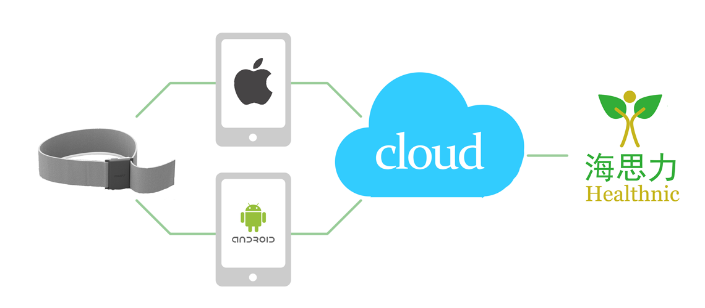
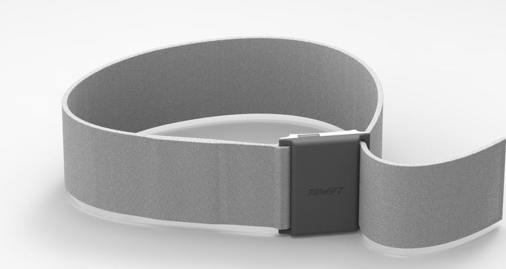
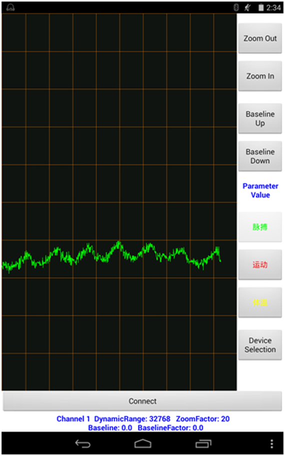
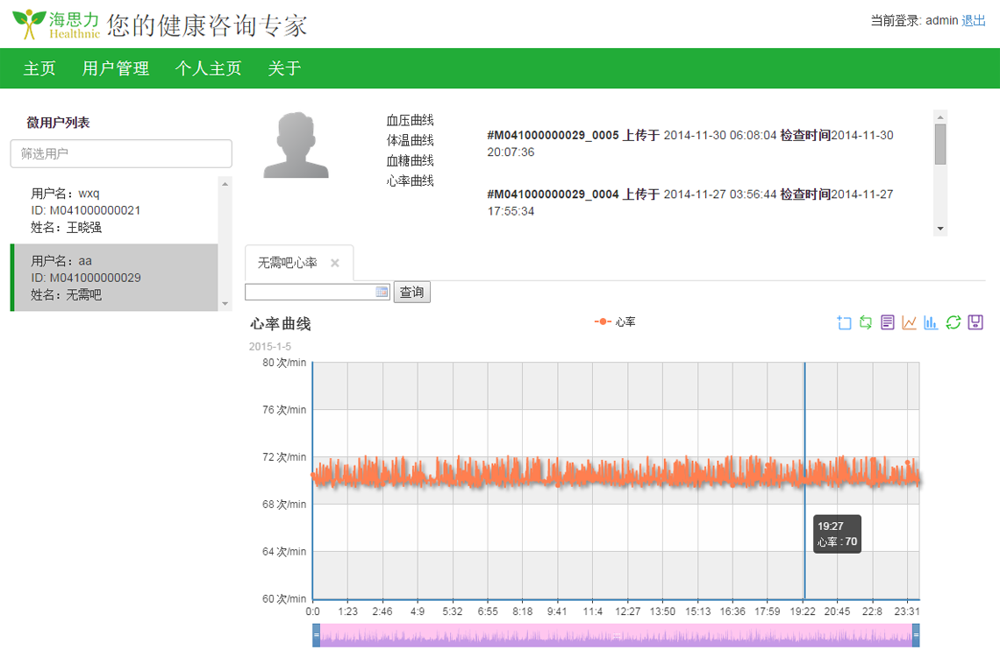
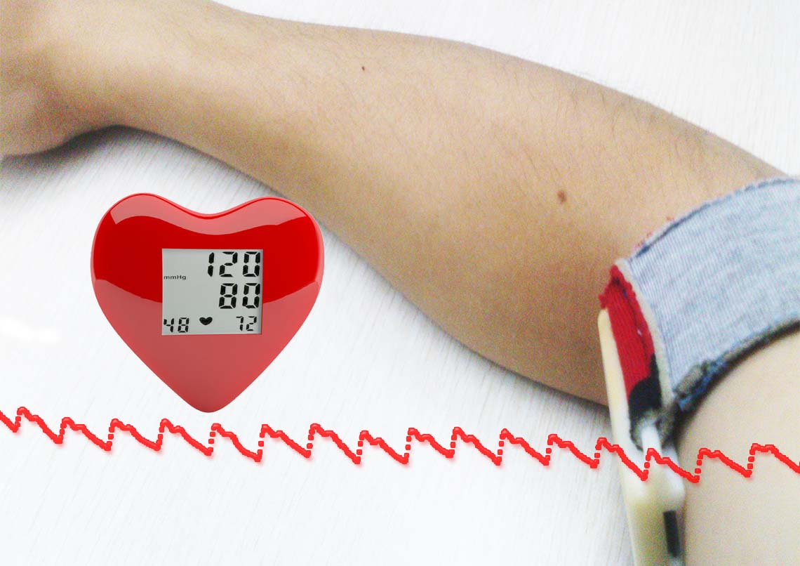
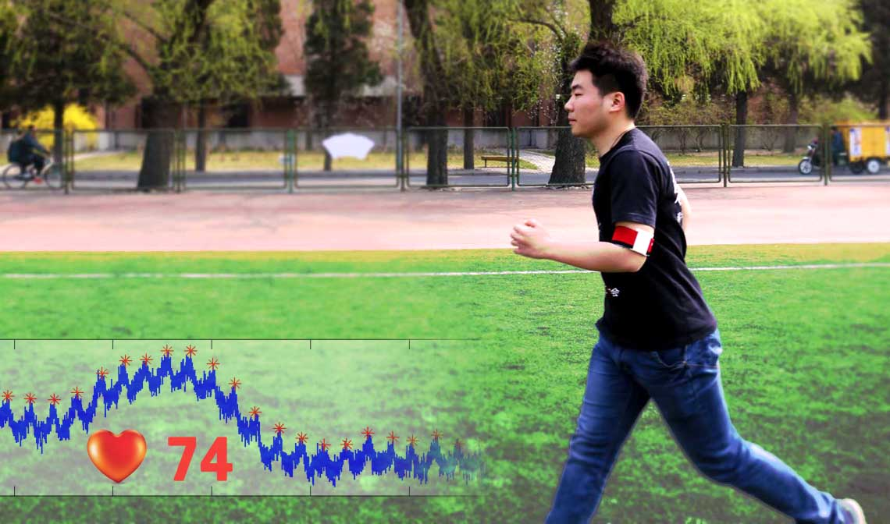

公司简介
北京海思力科技有限公司成立于2014年，公司致力于为穿戴式设备企业提供从穿戴式硬件、移动客户端到健康云服务一整套解决方案，并为其提供健康大数据分析与评估服务。我们以开放、分享、共赢的心态与业界开展合作，通过向客户提供有竞争力的解决方案，有价值的健康信息评估，帮助客户赢得穿戴式产品终端用户的青睐，实现我们与穿戴式设备企业以及终端用户三方共赢。
公司的创始人来自清华大学和中国科学院，在移动健康领域有多年的技术积累，成功研制了智能手机平台上的心电、体温、血压、血糖、步态等穿戴式健康设备，开发了智能手机健康体检系统、中医微服务系统和基于云计算平台的电子健康档案系统。公司正在开展的健康大数据分析与评估将为健康信息数据库提供算法引擎，为健康管理提供量化评估依据，为突发疾病提供预警。卓越的产品来自优秀的团队，公司将与大学、研究所、临床机构紧密合作，共同探索移动健康领域的未来。
产品

我们向移动健康领域的企业提供从穿戴式硬件、移动客户端到健康云服务一整套解决方案，客户可以根据需要剪裁和定制系统功能，把更多的精力投入到产品设计和市场推广上，缩短产品开发周期，增强核心竞争力。

我们的穿戴式硬件采用轻便舒适的空气层面料，制作成袖带佩戴在用户的上臂，可以长时间连续记录脉搏、体温和运动等健康信息，科学的佩戴位置和高精度传感器保证了采集到的人体生理信号的准确性，袖带内置的大容量存储器保证了数据记录的完整性。

运行在智能手机和平板电脑上的移动客户端软件可以实时显示用户的脉搏波信号波形、体温变化曲线和运动信息。用户的健康数据可以存储到智能终端或者上传到健康云服务器。

健康云服务网站记录和管理用户的电子健康档案。运行在云服务器上的数据分析算法能从采集到的含有运动干扰的脉搏波信号中提取心率信息；可以根据用户的运动信息进行运动模式的分类，从而了解用户从事不同类型活动的时间和强度；还可以对用户的睡眠进行分析，进而评估用户的睡眠质量。用户通过健康云服务可以回溯健康历史信息，进一步还能获得专业健康顾问的评估与建议，从而改善健康状况，提高生活质量。
服务
依托云计算平台，我们把核心算法通过云端API提供给合作伙伴。对于需要离线使用算法的企业，我们将为其提供离线SDK.

连续血压测量
目前测量血压的方法主要有柯氏音法和示波法，这些方法基于袖带压迫式测量原理。虽然准确度较高，但佩戴不方便，无法实现血压的连续测量。
我们为客户提供基于脉搏波信号的非压迫式血压测量算法，该算法通过提取脉搏波信号的特征计算血压。当用户处于静息状态时，测量误差可以达到10mmHg以内。客户可以根据连续测量的血压值对高血压患者预警、调整用药以及实现更有效的慢病管理。

动态心率监测
同大部分穿戴式心率监测设备一样，我们从光电容积脉搏波(PPG)信号中提取心率。但是这些穿戴式设备只能在用户处于静止或休息状态下监测心率(Resting Heart Rate)，而我们的算法可以在用户运动条件下持续监测心率(Active Heart Rate).
专业睡眠分析
大部分具有睡眠分析功能的穿戴式设备利用加速度传感器来感知用户睡眠过程中的身体运动，这种睡眠分析方式有两大弊端：
（1）需要用户在入睡前和睡醒后设置睡眠监测模式
（2）睡眠分析的准确度不高，只能计算出深睡眠时间
我们为客户提供基于心率变异性和加速度数据联合分析睡眠周期的算法，我们的算法能自动判断用户入睡和起床时间，精确划分睡眠周期：醒觉、浅睡、深睡、快速眼动(REM). 客户可以根据睡眠分析结果开发更优质的应用程序，比如音乐助眠、自然闹钟唤醒、外语单词助记等。